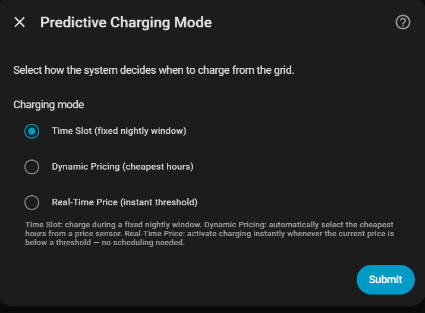
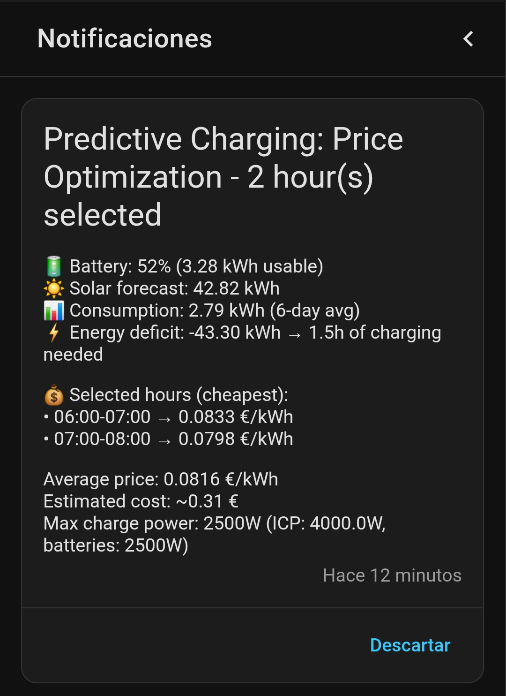

Carga predictiva¶
La carga predictiva compra energía de la red durante periodos baratos cuando la batería y la solar prevista no cubrirán la demanda de la vivienda. Elige el modo según cómo indique tu tarifa cuándo es barata la energía.
| Tu tarifa o fuente de precios | Lo que quieres | Modo recomendado |
|---|---|---|
| Los periodos baratos se repiten en un horario semanal conocido | Permitir la carga desde red solo en las ventanas que elijas | Franja horaria |
| Tu proveedor publica precios futuros | Dejar que Omnibattery elija los periodos más baratos que aún cumplen el plazo energético | Precio dinámico |
| Solo puedes leer el precio vigente ahora | Cargar siempre que el precio en directo esté bajo tu umbral | Precio en tiempo real |
| La energía cuesta lo mismo todo el día y no hay una ventana barata fija | Mantener el control normal de batería y la carga solar | No actives la carga predictiva desde red |
Los tres modos calculan si falta energía. La diferencia es quién decide cuándo puede comprarse: tú, un calendario de precios futuros o el precio actual.
¿Lo necesito?¶
Úsalo si… tu tarifa tiene periodos más baratos y quieres que Omnibattery compre solo la energía que espera que necesite la vivienda.
No lo necesitas si… la energía de la red cuesta lo mismo todo el día, quieres que la batería cargue solo con solar o ya hay otro gestor energético que programa la carga desde red.
Antes de empezar¶
- Configura la batería y un sensor principal de red que funcione.
- Prepara el horario o la fuente de precios que requiere el modo de la tabla anterior.
- La previsión solar es opcional. Se prefiere una previsión de energía restante porque no cuenta la solar ya producida; sin una previsión utilizable, Omnibattery planifica de forma conservadora sin solar futura.
- Un perfil local de consumo de la vivienda mejora la estimación. Consulta Estimación diaria y horaria del consumo.
Cómo activarlo¶
- Abre Ajustes → Dispositivos y servicios → Omnibattery → Configurar y activa la configuración de carga predictiva.
- Elige Franja horaria, Precio dinámico o Precio en tiempo real usando la tabla anterior.
- Introduce el horario o fuente de precios de ese modo, añade opcionalmente un sensor de previsión solar y termina el formulario.
- Abre la pestaña Control de Omnibattery y confirma que Carga predictiva está activada.

Qué verás¶
Carga predictiva activa muestra si se necesita, se ha planificado o está en curso una carga desde red. Un periodo barato visible puede ser informativo cuando la batería y la solar prevista ya cubren la demanda; no siempre implica una carga pendiente.
Cuando se necesita carga desde red, Omnibattery se dirige solo al déficit calculado en vez de llenar cada batería hasta su estado de carga (SOC) máximo. En un sistema con varias baterías, reparte ese objetivo según la capacidad disponible de cada una. Alcanzar el objetivo de carga desde red no bloquea el excedente solar posterior: la batería puede continuar en estado solo solar.
Usa SOC mínimo garantizado si el balance de todo el día parece suficiente pero la batería alcanza a menudo su mínimo antes de que empiece la producción solar. El interruptor y la entidad numérica establecen una reserva que debe estar disponible antes del inicio solar previsto.
Usa Reevaluar carga predictiva tras un cambio importante de previsión o ajuste. En Precio dinámico reconstruye inmediatamente el horario restante. En Franja horaria fuerza una decisión nueva en el siguiente ciclo de control dentro de una ventana de carga activa; pulsarlo fuera de una ventana no abre ninguna. Precio en tiempo real no tiene botón porque decide de nuevo en cada ciclo de control.
Desactiva Carga predictiva para pausar toda la carga predictiva desde red y sus subfunciones de Precio dinámico.
Si no funciona¶
| Síntoma | Causa probable | Qué comprobar |
|---|---|---|
| No se planifica carga desde red | La energía almacenada y la solar prevista ya cubren la demanda | Carga predictiva activa y sus atributos de decisión |
| Aparecen periodos baratos pero no empieza a cargar | El calendario es informativo, la cuota ya está cumplida o hay una regla de seguridad/control activa | charging_needed, la página del modo activo, límites de SOC de la batería y Estado de integración |
| El plan informa de un déficit no cubierto | Los periodos elegibles no pueden entregar suficiente energía antes de necesitarla | Potencia de carga, capacidad de batería, techo de precio, ventanas configuradas y bloqueos físicos |
| La batería carga demasiado o demasiado poco | La estimación solar o de demanda de la vivienda no coincide con el día restante | Tipo de sensor de previsión, cobertura del perfil de consumo y Margen de seguridad de previsión solar |
| La carga se pausa mientras aumenta la carga de la vivienda | La protección de potencia contratada, fase o capacidad conserva el límite de importación | Protección de capacidad y Sensor principal de red |
| Un cambio de ajuste no tiene efecto inmediato | El plan activo aún no se ha reconstruido | Pulsa Reevaluar carga predictiva donde esté disponible |
Detalles avanzados
Decisión energética y objetivo de carga¶
Omnibattery compara la energía utilizable de la batería por encima del SOC mínimo, la producción solar prevista y el consumo esperado de la vivienda durante el horizonte de planificación del modo:
if usable_battery + solar_forecast < expected_consumption:
grid_charge = expected_consumption - usable_battery - solar_forecast
else:
grid_charge = 0
Después reserva espacio de batería para la solar en vez de llenarla hasta el SOC máximo desde la red:
solar_surplus = max(0, solar_forecast − estimated_consumption)
grid_charge = max(0, gap_to_max − solar_surplus)
target_soc = current_soc + grid_charge / capacity × 100
Ejemplo: la batería necesita 5 kWh para alcanzar max_soc. La previsión solar es de 13 kWh y el consumo esperado es de 10 kWh, dejando un excedente de 3 kWh disponible para la batería. Omnibattery carga solo 2 kWh desde la red; la solar aporta los 3 kWh restantes durante el día.
En una flota con varias baterías, el objetivo de red se distribuye proporcionalmente a la distancia de cada batería a su SOC máximo configurado. Precio dinámico y Franja horaria también pueden asignar una cuota a cada periodo y transferir la energía no entregada solo a periodos posteriores que aún cumplan su plazo.
Margen de seguridad de previsión solar se resta una vez de la solar esperada. Las instalaciones nuevas tienen por defecto aproximadamente el 5% de la capacidad total de batería configurada; si la capacidad no está disponible durante la configuración, el método alternativo es no aplicar margen.
Demanda de la vivienda durante una franja de carga¶
Un periodo predictivo mantiene la responsabilidad sobre las baterías hasta que termina o alcanza su objetivo. El control proporcional–derivativo (PD) normal no toma el control inmediatamente cuando aumenta la demanda de la vivienda porque la importación de red aún puede incluir la orden de carga previa de la batería.
El techo de importación es el menor entre la potencia contratada y el límite de protección de capacidad cuando esta función está activada. Omnibattery primero reduce la carga para que la vivienda reciba la capacidad de red disponible. Si el cálculo cruza a descarga durante un exceso ordinario, mantiene la menor carga positiva efectiva y conserva el estado incremental del PD.
Un exceso físico se convierte en emergencia solo después de que tres publicaciones consecutivas y recientes del contador lo confirmen. La protección de emergencia puede entonces esperar la respuesta del inversor y descargar solo el exceso estabilizado. Tras dos muestras recientes que muestren al menos max(200 W, 2 × PD deadband) de capacidad disponible, la carga se reanuda desde ese margen en vez de desde la potencia máxima de batería.
Por ejemplo, con un límite de potencia contratada de 2.000 W y una carga física estabilizada de la vivienda de 2.800 W, la protección de emergencia solicita unos 800 W de descarga para mantener la importación cerca de 2.000 W. Un pico breve que desaparece mientras se estabiliza la telemetría no activa esa descarga.
0 W se reserva para bloqueos explícitos, límites del sistema de gestión de batería (BMS), baterías no disponibles, telemetría crítica, el final de un periodo, SOC alcanzado, protección de fase o una emergencia de seguridad confirmada. La descarga de seguridad puede ignorar bloqueos económicos de precio o de limitación de producción solar, pero no puede ignorar el SOC mínimo, baterías no disponibles o controladas manualmente, restricciones de respaldo/RS-485, límites de dispositivo y sistema ni la protección de fase.
Si el contador de red deja de publicar, una orden protectora no aumenta desde un valor antiguo. Cuando la telemetría supera el límite de datos antiguos, las baterías bajo control automático vuelven a reposo hasta que se estabilicen datos recientes.
Una carga suspendida conserva su objetivo y el registro de energía no entregada. Precio dinámico intenta mover la cuota a futuros periodos elegibles; Franja horaria reconstruye el plan de ventana restante desde el SOC en vivo; Precio en tiempo real registra el déficit no cubierto porque no tiene calendario futuro de precios.
SOC mínimo garantizado¶
El balance energético total puede ser positivo mientras se prevé que la batería se vacíe antes de que empiece la solar. SOC mínimo garantizado añade energía suficiente para conservar el suelo seleccionado hasta que comience la producción solar efectiva. Precio dinámico elige periodos baratos elegibles antes de ese plazo; los límites de precio configurados y los bloqueos físicos siguen aplicándose, por lo que una garantía imposible aparece como déficit no cubierto.
La carga se detiene en el suelo cuando esta reserva es la única razón para cargar. Se rearma tras caer el SOC cinco puntos porcentuales por debajo del suelo, evitando cambios repetidos en el límite.
Cronologías de consumo y solar¶
Las instalaciones maduras usan el perfil local de consumo de la vivienda de 15 minutos. La estimación diaria heredada sigue siendo un método alternativo. Precio dinámico y sus reevaluaciones diurnas solicitan el horizonte restante en hora local hasta el próximo amanecer. Los periodos de carga predictiva se eliminan de la demanda derivada de la vivienda para que la carga de batería no se aprenda como consumo doméstico.
El total solar y su distribución temporal son entradas separadas. La prioridad de la cronología es:
- Periodos fechados válidos proporcionados por el proveedor de previsiones.
- Un perfil local maduro aprendido de telemetría solar directa y de seguimiento del punto de máxima potencia (MPPT) de la batería.
- Una curva sinusoidal de luz diurna.
- Una cronología cero cuando no existe una ventana de luz diurna segura.
El perfil aprendido se normaliza antes de aplicar el presupuesto de previsión. Da forma a cuándo llega la energía prevista; no predice el total, repara una mala previsión meteorológica, controla un inversor solar ni reconstruye energía limitada.
Entre los atributos de decisión útiles están solar_timeline_source, solar_remaining_raw_kwh, solar_remaining_effective_kwh, solar_timeline_fallback_reason, solar_profile_mature, solar_profile_coverage_ratio, chronological_planning_active, slot_energy_targets_kwh y total_shortfall_kwh.
Notificaciones¶
Franja horaria puede notificar una hora antes de un periodo configurado y cuando empieza a cargar. Precio dinámico también comprueba antes de futuros periodos seleccionados, durante la evaluación de final del día, tras una caída importante de SOC y cuando están disponibles los precios de mañana. Las páginas de cada modo describen el comportamiento exacto.
